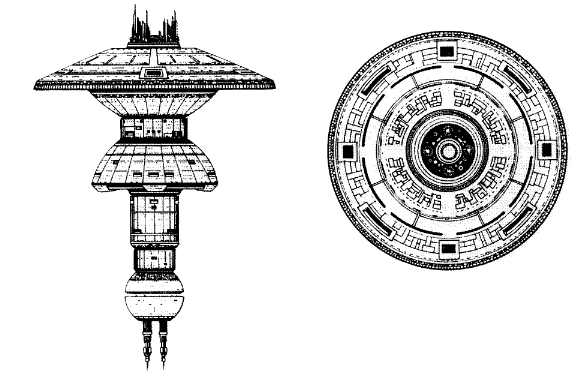

Earth Spacedock (UFP)

Battle Stats
Reactors and Superstructure
Total Power Units - 300 (Primary Fusion Reactor - 210, Impulse Engines - 90)
MPR - Can't move!
Superstructure - 250
Beam Weapons (Phasers)
Max Power - 10
Firing Chart - Y
Arcs - 8 per arc
Bonuses - +3(1-10) +2(11-17) +1(18-24)
Missile Weapons (Photon Torpedoes)
Power to Arm - 1
Damage - 20
Firing Chart - S
Arcs - 4 per arc
Deflector Shields
Max Shield Power - 36
SPR - 3/1